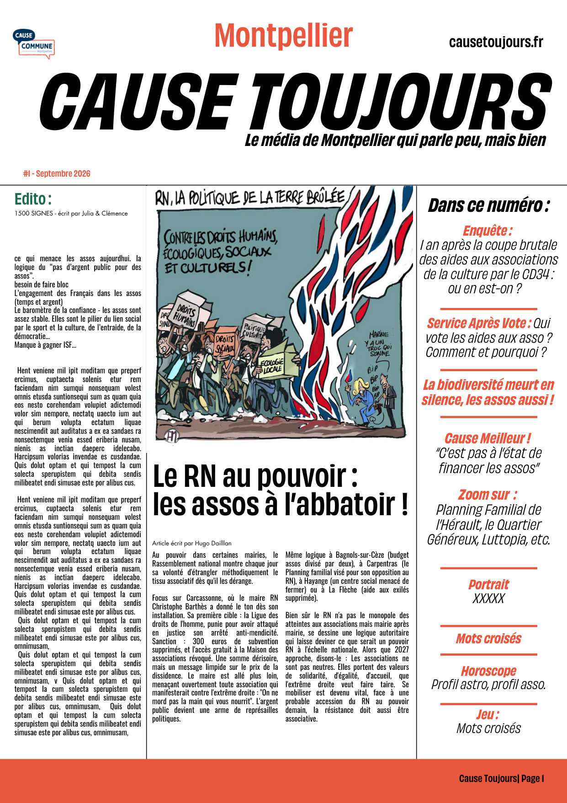

L'info de Montpellier qui s'affiche en grand
Papier bi-mensuel. 100% bénévole. Indépendant des milliardaires et des pouvoirs locaux. Montpellier.

La presse locale est morte. Midi Libre appartient à des milliardaires, la com' institutionnelle noie l'information sous les communiqués. Il manque une voix libre, indépendante, qui ne rend de comptes qu'à ses lecteurs.
Nous avons choisi le papier bi-mensuel contre l'infobésité et le flux continu d'écrans. Un objet qu'on garde, qu'on relit, qu'on prête. Pas une notification qu'on oublie.
100 % bénévole et engagé. Personne ne prend de salaire. Chaque euro récolté finance le prochain numéro. Pas d'actionnaires, pas de subventions conditionnelles, pas de pub déguisée.
Cause Toujours ! est un média local, ancré à Montpellier, qui parle de ce qui se passe ici — culture, luttes, ville, gens — sans filtre et sans peur.
Prélèvement mensuel. La base solide pour construire sur le long terme.
DON MENSUEL →Chez nous, 0 € ne va dans la poche d'actionnaires : tout est réinvesti dans le prochain numéro de notre média local et indépendant.
L'adresse postale est demandée lors du paiement pour l'envoi des numéros.
Aperçu de la Une
Poster A2 central
Les solutions des mots croisés et fléchés du dernier numéro.
Les réponses seront publiées ici à la sortie du prochain numéro.
Carte des points de vente
(à intégrer)
Cause Toujours ! est un collectif de bénévoles montpelliérains qui croit qu'une ville a besoin d'un média qui lui ressemble : libre, impertinent, culturel, ancré. Pas un relais de com'. Pas un journal de pub.
Nous écrivons, imprimons, distribuons nous-mêmes. Personne ne nous dit quoi dire.
Vous écrivez, dessinez, photographiez ? Vous voulez contribuer ?
ÉCRIRE À L'ÉQUIPE →